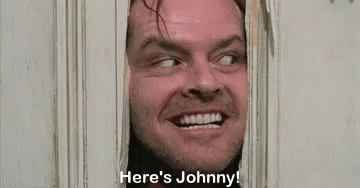

horrorLog
Ez az oldal arra szolgál, hogy lehetőséget teremtsen a felhasználóknak az archivált, elfeledett horror filmek beküldésére, amelyet valamikor még annó látott, és az interneten nem lelhető fel!
Miért jó a horror?
A horror filmek számosféle érzést és reakciót váltanak ki a nézőkből, és ennek számos oka lehet:
- Feszültség és Izgalom: A horror filmek izgalmasak és feszültséggel teliek, amelyek megmozgatják az érzelmeket.
- Adrenalin Felszabadulás: A rémisztő pillanatoknak köszönhetően az agyunk adrenalin felszabadulást tapasztal, ami felélénkít és élénkít.
- Pszichológiai Élmény: A pszichológiai horror megmutatja az emberi elmét és az emberi félelmek mélyebb rétegeit.
- Váratlan Fordulatok: A horror gyakran tartogat váratlan fordulatokat és meglepetéseket, amik fokozzák a film élvezetét.
És mint ahogy egy fagyizóban sem csak vanília vagy csokoládé van, a horror műfaj is változatos. Legyen szó pszichológiai horrorról, paranormális eseményekről vagy véres slasher filmekről, mindenkinek van lehetősége megtalálni a saját ízlésének megfelelő rémisztő élményt!
